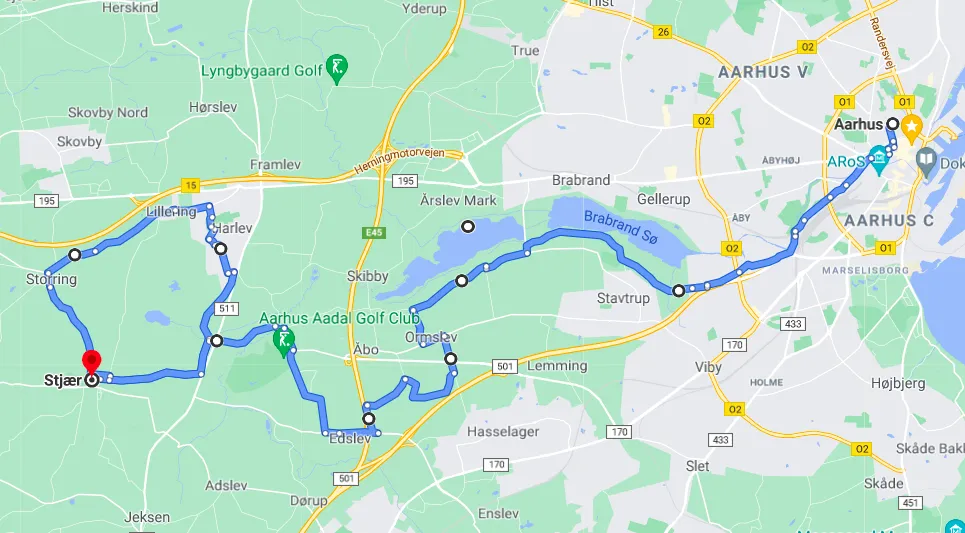
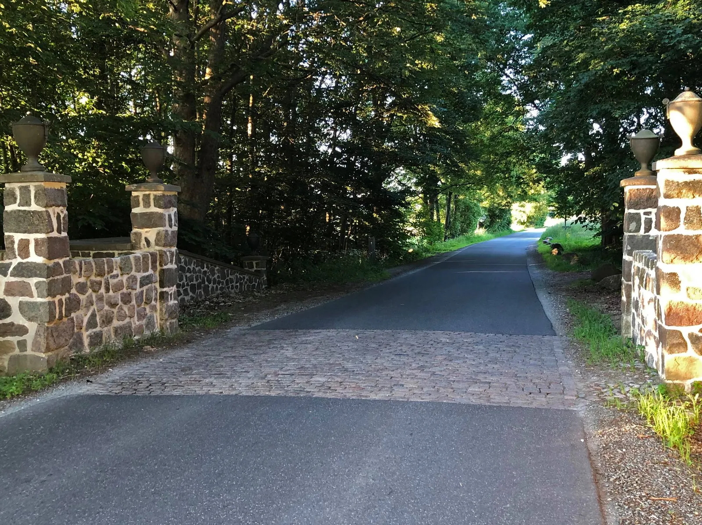
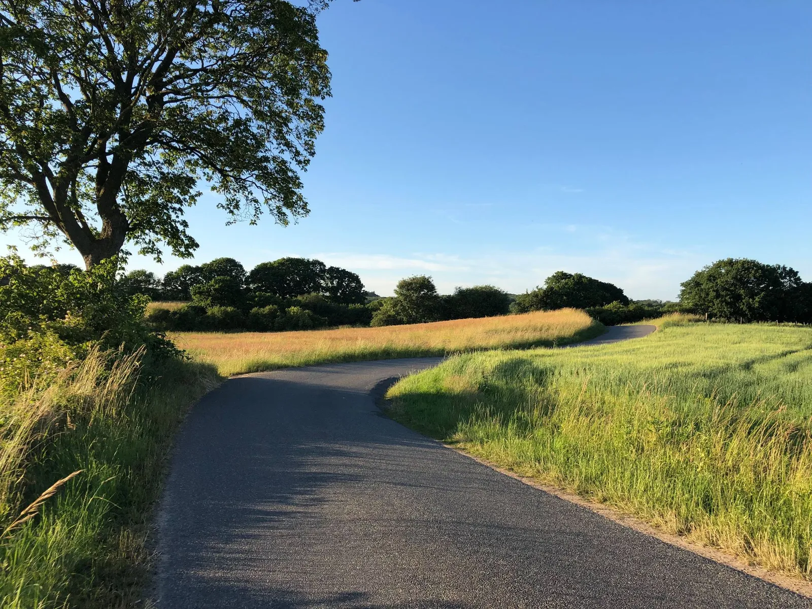

12. etape: Aarhus – Stjær – Svend Seegert vinder og sender hele feltet ud i kornmark

Svend Seegert vandt 12. etape, der var en kort men kuperet og aldeles uforudsigelig etape fra Aarhus til Stjær, som blev præget af ikke mindre en 4 lange stykker med pavé og et S-sving, der forhindrede dagens udbrud i at blive hentet. 

Svend Seegert – under fortsat genoptræning efter at komplicerede knæproblemer har fyldt forårs-sæsonen – havde på forhånd udset sig denne etape til at teste formen, knæet og moralen af.
Jeg havde på forhånd tænkt at gå i udbrud, for derved bedre selv at kunne bestemme farten, fortæller Svend Seegert.


Han havde i starten selskab af et par Peugeot-ryttere og en enkelt tyggegummi-farvet konkurrent – men deres cykler desintegrerede ganske simpelt på den første pave der markerer indkørslen på milliardær Holch-Poulsens reservat lige uden for Aarhus.
Svend Seegert fortsatte dog ufortrødent – nu totalt selvbestemmende og efter en Bahamontes is på toppen af den berygtede Ormslevbakke og endnu et par pavé-stykker og en rundtur i Stjær bakker gik turen nu med op til 75 km/t ned gennem ådalen mellem Stjær og Harlev. Feltet havde faktisk på dette tidspunkt næsten indhentet Svend Seegert men i et S-sving tog tingene (og feltet) en uventet drejning.


Jeg er ikke helt klar over hvad der skete, men lige inden svinget, fik jeg med ca 65 km/t en flue i øjet. Jeg fik den fjernet med en bevægelse af venstre hånd og rystede derefter de sørgelige rester af insekt og hornhinde af – men feltet tog det vist som en afvisning til venstre, fortæller Svend Seegert.
Feltet forsvandt derfor ud i kornmarken med ca samme hastighed – og det gav lige præcis så megen luft og moral at Svend Seegert holdt hele vejen til Tåstrup og det sidste stykke hjem til målstregen ved Brugsen i Stjær.
FORZA SVEND
12. Etape:
1. Svend Seegert, Squadra Molteni
Klassement:
1. Svend Seegert, Squadra Molteni
2. Jens Langergaard, Squadra Molteni
3. Eigil Leegaard, Squadra Molteni
4. Max ”Maxteni” Nielsen, Squadra Molteni
5. Per Sandahl, Squadra Molteni
6. Grane Maaløe, Squadra Molteni
7. Niels Bjørnsteen, Squadra Molteni
8. Løjtnant Sørensen, Squadra Molteni
Hold:
1. Squadra Molteni
2. Team K-Werk
DNS-Klassement:
Thomas Marker, Team Brooklyn